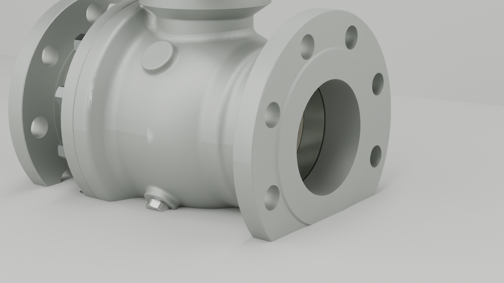
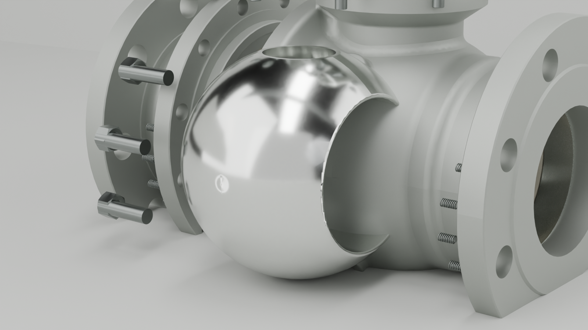

Goal 21 / Blender Cycles / material micro-loop
喷砂不锈钢与抛光球体
这里只做两张材质 still：阀体喷砂不锈钢和球体棚拍反射。不替换 hero，不生成 24 或 240 帧。
1600x900render size
138STEP mesh instances
2focused materials
2rendered stills


Manifest: render-manifest.json. Material status: material-status.md. Source mesh remains Goal 20's STEP-derived goal20-step-mesh.glb.